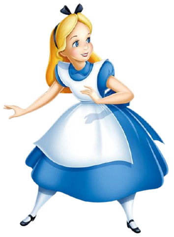
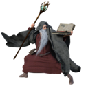

Les genres
Nous avons quelquefois tendance à situer l’apparition du genre fantasy durant l’Antiquité avec ses nombreux récits mythologiques. C’est un peu contestable et s’il s’agit là d’un ancêtre très lointain de ce que nous nommons aujourd’hui Fantasy, cela permet de rappeler que ce genre n’est pas né avec Le Seigneur des Anneaux, la saga Harry Potter encore moins le Trône de Fer..
Dark Fantasy
La fantaisie sombre
La Dark Fantasy verse davantage dans le genre de l’horreur au sens large en comparaison de ses camarades ci-dessous. Ma foi, on pourrait tout simplement y mettre Dracula ou encore The Witcher.
Epic Fantasy
La fantaisie sombre
La fantaisie… épique ou la haute fantaisie.
Nous l’associons souvent à la “High Fantasy” et c’est typiquement… Tolkien! Des quêtes de grande envergure, nombres de personnages qui combattront des forces mystérieuses dans des combats… épiques!
Nous y retrouvons donc Tolkien mais aussi Game of Thrones ou encore Le Cycle des Démons.
Heroic Fantasy
La fantaisie héroïque
Je sais que je vais un peu te perdre si je te dis que l’Heroic Fantasy est plutôt proche de l’Epic Fantasy.
Vous l’aurez deviné, les récits se focalisent sur un héros. En général, il possède des talents uniques qui lui permettent de vaincre une entité maléfique. Et oui, c’est toujours et encore la bonne vieille histoire du bien et du mal !
Tu veux des exemples? The Hobbit, Inheritance (Eragon, mais en anglais!)…
Eh ! mais pourquoi Le Hobbit ,c’est de l’Heroic Fantasy et Le Seigneur des Anneaux c’est de l’Epic?!
Tu touches au fond du problème: la subtilité de la nuance. Le Hobbit se focalise davantage sur un personnage, en particulier (Bilbo) et son aventure. Le Seigneur des Anneaux touche davantage à plusieurs personnages (la communauté de l’anneau).
Les deux sont épiques ;)
Low Fantasy
La… le fantastique. Ou la basse fantaisie?
Le low fantasy c’est que nous définirions, en français, comme Fantastique: entre notre monde et un monde magique.
Dedans, forcément, nous trouverons notre cher Harry Potter une fois de plus et même Twilight :)
Portal Fantasy
Le fantastique de portails.
Ici, la définition est un peu dans le nom! Il y a une notion de voyage à travers quelque chose. On y retrouve Narnia forcément, Alice au Pays des Merveilles, Tara Duncan…
Urban Fantasy
La fantaisie urbaine.
Encore un dont la définition est dans le nom mais qui est ma foi un peu compliqué quand même. Urbain?
Contemporain? Moderne? Ce serait un peu du Low Fantasy plus proche du monde réel, en fait :).
On pourrait y mettre The Mortal Instruments par exemple ou encore American Gods
Paranormal Romance
La romance paranormale.
Là, les lignes deviennent floues. On est généralement dans du Low Fantasy / fantastique (monde réel, donc) mais avec un brin de folie qui n’est pas de la magie à proprement parler mais qui relève des phénomènes étranges malgré tout.
C’est un genre qui se marie bien avec la romance et on y retrouve facilement des vampires, des loups-garous et plein d’autres créatures angéliques et démoniaques.
Et on peut y rajouter Kitty Lord ou encore Dark Lover. Bon du coup on y retrouve facilement beaucoup d’erotic fantasy aussi.
Fantasy Romance
La romance fantastique.
Forcément, on touche du doigt la romance avec la Paranormal Romance, faut bien qu’on continue avec un sous-genre dédié. Tu le retrouveras généralement dans du High Fantasy car le Low Fantasy tendra plutôt vers le Paranormal Fantasy car plus proche du monde réel (eh oui !).
Space Fantasy
Fantasy dans l'espace
C’est un beau mariage entre la science-fiction et la fantasy. L’influence des contes et des légendes est toujours présente. En principe, les récits se déroulent dans l’espace.
Arthurian fantasy
Fantasy arthurienne
Elle découle directement de la légende du Roi Arthur et des chevaliers de la Table Ronde. Les romans sont centrés sur des personnages ou des éléments associés au mythe comme Merlin , Excalibur, la Dame du Lac, etc.
Derniers mots sur la Fantasy
Au XXe siècle, le genre fantasy connaît un énorme succès qui le fait dépasser largement les frontières de la littérature. Il conquiert l’univers du 7ème art et émerveille le public. Ainsi, plusieurs réalisateurs adaptent de nombreux romans à l’écran. Le cinéma muet compte divers essais, mais c’est véritablement en 1939 que la fantasy réussit véritablement […].